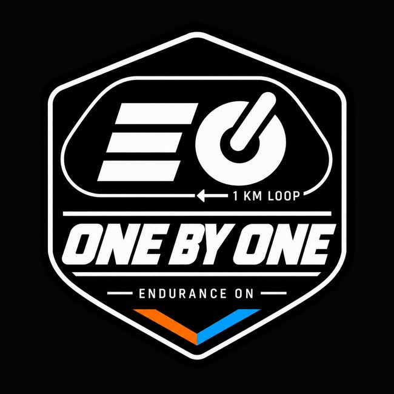

Quarteto
- Atletas
- 4
- Voltas por atleta
- 10 obrigatórias
- Distância individual
- 10,5 km
42 km em revezamento. Uma equipe. Cada atleta conta.
No dia 19 de dezembro, a Endurance On vai encerrar o ano com um desafio diferente: completar 42 km em equipe, um trecho de cada vez. É uma oportunidade para correr com novos colegas, torcer e celebrar tudo o que construímos juntos ao longo da temporada.
Confirme sua participação até 05/12.

O ONE BY ONE é um convite para reunir nossos atletas, compartilhar quilômetros, criar novas conexões e celebrar mais um ano juntos. A proposta combina cooperação e uma disputa divertida, com cada participante contribuindo para o resultado do seu time.
A competição anima. A integração é o que fica.
Cada traço é uma volta de 1.050 m.
Cada equipe completa 40 voltas em um circuito de 1.050 metros, totalizando 42 km. O percurso é feito em revezamento: os integrantes se alternam, e cada atleta cumpre a quantidade de voltas prevista para seu formato. A ordem dos corredores e os procedimentos das trocas serão apresentados pela organização na orientação das equipes.
Nos dois formatos, a equipe completa as 40 voltas e os 42 km.
Na inscrição, você escolhe quarteto ou octeto. Essa escolha será respeitada na montagem dos times. Quartetos disputam com quartetos; octetos, com octetos.
A inscrição é individual. Você informa nome completo, treinador e formato escolhido. Não é necessário chegar com uma equipe pronta.
A Endurance On organiza os times utilizando VDOT, testes e provas recentes dos alunos, com revisão dos treinadores. Esses dados ajudam a estimar o desempenho dos participantes e a buscar equipes com capacidade semelhante dentro de cada formato.
O objetivo não é selecionar quem pode participar nem criar um ranking individual dos alunos: é tornar a disputa mais equilibrada e incentivar a integração. As estimativas individuais são utilizadas apenas pela organização. Equilíbrio é o ponto de partida, não uma promessa de resultados iguais.
Vence a equipe que completar os 42 km no menor tempo, considerando seu formato: quarteto ou octeto.
Antes da largada, cada equipe informa o tempo total que acredita que fará. Depois da chegada, a organização compara essa previsão com o tempo real. Quanto menor a diferença, melhor a colocação. Vale tanto terminar antes quanto depois do tempo previsto.
Exemplo fictício, com equipes do mesmo formato. Esta é a classificação do Desafio da Precisão, não a classificação geral da corrida.
| Equipe | Previsto | Real | Diferença | Posição |
|---|---|---|---|---|
| Equipe A | 3h15min10s | 3h12min10s | 3min00s | 3º |
| Equipe B | 3h20min00s | 3h19min20s | 40s | 1ºvence |
| Equipe C | 3h28min30s | 3h30min00s | 1min30s | 2º |
A Equipe B vence o Desafio da Precisão porque ficou apenas 40 segundos do tempo previsto. A Equipe A foi a mais rápida neste exemplo, mas terminou três minutos antes da previsão. A Equipe C terminou 1min30s depois, e essa diferença também conta.
Faça sua inscrição individual, escolha quarteto ou octeto e reserve o dia 19 de dezembro.
A EON analisa os dados e organiza os times, respeitando o formato escolhido por cada participante.
Apresentação pelo Google Meet para divulgar as equipes, explicar o regulamento e orientar o revezamento. O link será divulgado pela organização.
Reunir a turma, correr em equipe e encerrar o ano juntos. Local e horário serão informados pela organização.
R$ 40,00por pessoa
Valor destinado ao café da manhã e à estrutura do evento.
A inscrição é individual e deve ser confirmada até 05/12. Você será direcionado ao site de inscrições da Endurance On para concluir o processo.
Sua confirmação entra na montagem dos times. Confirme quando tiver condições de participar e reserve o dia 19/12. Caso aconteça algum imprevisto depois, avise a organização para que possamos ajustar a equipe.
Não. A inscrição é individual, e a EON será responsável pela formação dos times.
Sim. Você escolhe um dos formatos, e essa escolha será respeitada. A inscrição não oferece a opção de participar em ambos.
No quarteto, cada atleta corre dez voltas de 1.050 m, totalizando 10,5 km. No octeto, são cinco voltas de 1.050 m, totalizando 5,25 km.
A proposta é integrar nossos atletas, sem comparação pública de ritmos. A EON usa os dados de desempenho para equilibrar as equipes, não para transformar a participação em uma seleção. Seu treinador pode ajudar na escolha do formato.
Com VDOT, testes e provas recentes, além da revisão dos treinadores, buscando equilíbrio dentro de cada formato. As estimativas individuais não serão divulgadas publicamente.
Antes da largada, a equipe informa seu tempo total previsto. Depois da prova, comparamos esse tempo com o resultado real. Vence quem tiver a menor diferença, para mais ou para menos.
Na apresentação de 08/12/2026, às 19h, pelo Google Meet. O link será divulgado pela organização.
São R$ 40,00 por pessoa, destinados ao café da manhã e à estrutura do evento.
Até 05/12/2026. A confirmação de cada pessoa é importante para a montagem dos times.
O evento será em 19/12/2026. O local e o horário serão informados pela organização.
Avise a organização assim que possível para que ela possa orientar os próximos passos e avaliar os ajustes necessários na equipe.
Uma volta de cada vez. Novas conexões. Um encerramento para viver em equipe.
A competição anima. A integração é o que fica.
Até 05/12 · R$ 40,00 por pessoa
SAME LOOP. BIGGER PEOPLE.
No computador? Aponte a câmera do celular para o QR code e continue por lá.